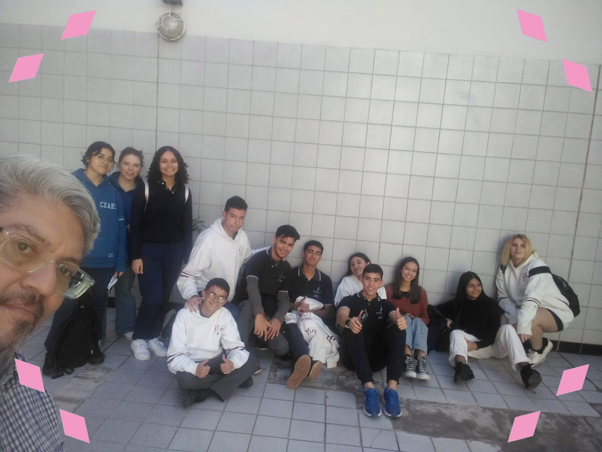

El pasado miércoles 24 de abril, quinto año fue parte de la charla vocacional que tuvo como anfitriones a la Universidad Kennedy, donde tuvieron la oportunidad de poder recorrer y conocer las instalaciones de dicho centro de estudios superiores.
Ese día al llegar, los alumnos fueron recibidos por parte del equipo técnico de la institución con algunos caramelos y como detalle una libreta con su respectiva lapicera que identificaba a la universidad. Pasaron al anfiteatro donde los esperaba la psicóloga xxx para dar inicio a la charla programada, en esta los jóvenes participaron de un espacio donde pudieron reconocer las diferencias entre motivación, vocación y profesión; al mismo tiempo entender que una funciona a la mano de la otra y que no es necesario correr contra el tiempo buscando desesperadamente aquello para lo que son buenos, lo necesario es entender qué los mueve y qué quieren para ellos.
Luego de esta amena charla, pasaron a un receso en el que recorrieron los diferentes espacios de la institución. Al volver, los chicos tuvieron la oportunidad de ver las diversas carreras tanto presenciales como virtuales que ofrece la universidad, entre ellas podemos encontrar licenciatura en psicología, bioquímica, contador público, periodista, etc; en este momento los jóvenes se dividieron según sus intereses e inquietudes en secciones como “ciencias de la salud” y “ciencias sociales y humanísticas”. Ya en sus lugares, se les contó un poco de lo que trataba cada carrera y qué conlleva cada una, esto se dió mediante juegos y conversaciones recíprocas con el equipo docente.
Para finalizar, todos los colegios participantes se reunieron en el patio común compartiendo un rico refrigerio obsequiado por parte de la institución que los recibió; se tomó una foto grupal y se agradeció por la cálida jornada.
